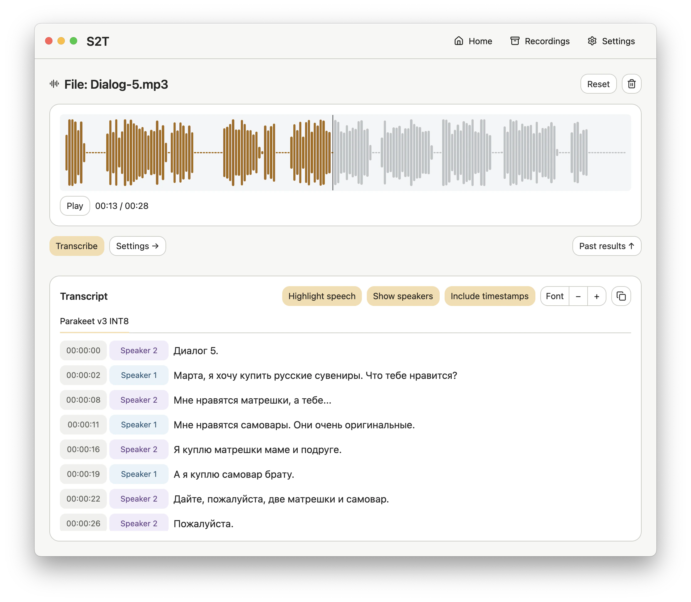

Запись и плеер
Выберите микрофон или откройте аудиофайл. Перемещайтесь по записи с помощью звуковой волны.
Преобразуйте аудио в текст с таймингами и отметками говорящих. S2T обрабатывает записи на вашем компьютере.
Скачать v0.4.2 · macOS и Windows · бесплатно и с открытым кодом
Выберите микрофон или откройте аудиофайл. Перемещайтесь по записи с помощью звуковой волны.
Распознавайте речь без отправки аудио на сервер. После загрузки моделей обработка работает офлайн.
Сравнивайте расшифровки одной записи. S2T хранит результаты разных моделей отдельно.
Запишите речь в S2T или откройте готовый файл.
Выберите скачанную модель и нажмите «Распознать».
Включите тайминги и отметки говорящих, если они нужны.
Интерфейс S2T доступен на русском и английском. Язык можно сменить в настройках приложения.
Интернет нужен для скачивания приложения и моделей. Распознавание выполняется локально.
Да. Русский поддерживают, например, Parakeet v3, GigaAM-v3 и T-one. Список языков зависит от модели.
Приложение бесплатное. Исходный код доступен на GitHub.
Напишите в GitHub Issues.
Выберите сборку для своего компьютера. Модели можно скачать отдельно в настройках приложения.